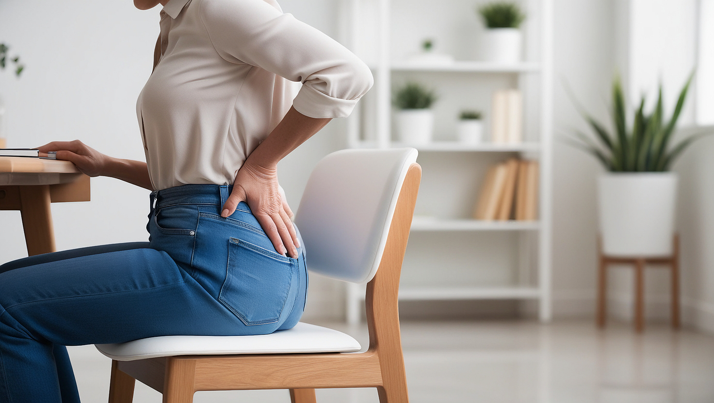

🌀 Dor na Coluna: Entenda as Principais Causas
A dor na coluna é uma das queixas mais comuns no consultório médico. Ela pode surgir de repente, após um esforço físico, ou de forma contínua, atrapalhando o sono, o trabalho e até as atividades simples do dia a dia.
Entre as principais causas estão a **lombalgia mecânica** e a **hérnia de disco**.
👉 A boa notícia: na maioria dos casos, existe tratamento sem necessidade de cirurgia.
🔎 O que é Lombalgia Mecânica?
A lombalgia mecânica é a famosa dor na parte baixa da coluna, geralmente provocada por má postura, esforço físico, sobrepeso ou fraqueza muscular.
Sintomas mais comuns:
- Dor na região lombar que piora ao esforço
- Rigidez após ficar muito tempo em pé ou sentado
- Alívio da dor com repouso
- Dificuldade para realizar movimentos do dia a dia
É um problema extremamente frequente, e felizmente costuma melhorar bem com tratamento adequado.
🔎 O que é Hérnia de Disco?
A hérnia de disco acontece quando o disco intervertebral (estrutura que funciona como “amortecedor” entre as vértebras) se desloca ou se rompe, comprimindo nervos próximos.
Sintomas mais comuns:
- Dor na lombar que irradia para a perna (a famosa “ciática”)
- Formigamento ou perda de força na perna
- Dor que piora ao tossir, espirrar ou ficar muito tempo sentado
- Em casos graves, dificuldade de andar ou controlar funções urinárias
A hérnia pode aparecer após esforço físico intenso, mas também está relacionada ao envelhecimento natural da coluna.
💡 Como é o Tratamento?
Tanto na lombalgia quanto na hérnia de disco, o tratamento é individualizado, mas geralmente envolve:
- ✅ Fisioterapia – fortalecimento e alongamento para aliviar a dor e prevenir crises
- ✅ Medicamentos – analgésicos e anti-inflamatórios em momentos de crise
- ✅ Mudança de hábitos – correção postural, exercícios regulares e controle do peso
- ✅ Infiltrações – em alguns casos, para reduzir inflamação e dor
- ✅ Cirurgia – indicada apenas quando o tratamento clínico não traz melhora ou há comprometimento neurológico importante
📍 Quando Procurar Ajuda?
Se você sente dor frequente na coluna, especialmente se ela irradia para as pernas, causa formigamento ou perda de força, é hora de procurar um ortopedista.
⏳ Quanto antes o diagnóstico for feito, mais rápido e eficaz será o tratamento.
✅ Retome sua Qualidade de Vida
Viver com dor na coluna não deve ser considerado normal. Com o acompanhamento certo, é possível controlar a dor, prevenir novas crises e voltar a ter uma rotina sem limitações.
📲 Agende agora sua consulta e dê o primeiro passo para cuidar da sua coluna.
Quero Agendar Minha Consulta